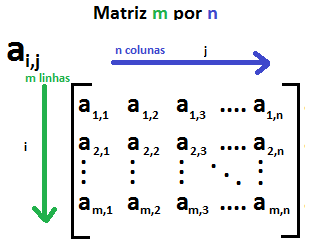

O Mundo das Matrizes
Sumário:
Uma matriz é uma estrutura matemática que organiza dados em linhas e colunas, formando uma tabela retangular. Ela é usada para representar informações relacionadas entre si de uma maneira organizada e eficiente. Matrizes são amplamente utilizadas em várias áreas da matemática, ciências da computação, engenharia e muitos outros campos.
Uma matriz é definida por dois parâmetros principais: o número de linhas e o número de colunas. Esses parâmetros determinam a dimensão da matriz. Por exemplo, uma matriz com 3 linhas e 4 colunas é chamada de matriz 3x4 (lê-se "três por quatro"). As entradas individuais da matriz são os elementos, que são organizados em posições específicas de acordo com as linhas e colunas.
As matrizes são sempre representadas por letras maiúsculas (A, B, C…), que são acompanhadas por índices, nos quais o primeiro número indica a quantidade de linhas, e o segundo, o número de colunas. A quantidade de linhas (fileiras horizontais) e colunas (fileiras verticais) de uma matriz determina sua ordem. A matriz A possui ordem m por n. As informações contidas em uma matriz são chamadas de elementos e ficam organizadas entre parênteses, colchetes ou duas barras verticais.
Exemplo de matriz:
| 1 2 |
| 3 4 |
| 5 6 |
Vídeo - Introdução às matrizes
Exemplo de Exercício Resolvido
Resolva a seguinte equação:
| 2 1 | | 3 4 |
Para resolvê-lo, primeiro, calcule a determinante da matriz, que é dado por:
det(A) = (2 * 4) - (1 * 3) = 8 - 3 = 5
Portanto, o determinante da matriz é 5.
Perguntas
Vamos revisar a teoria de Matrizes!!
Dúvidas?
Tire suas dúvidas aqui e deixe-nos ajudá-lo a encontrar as respostas que você procura.
Resolver exercícios de Matrizes